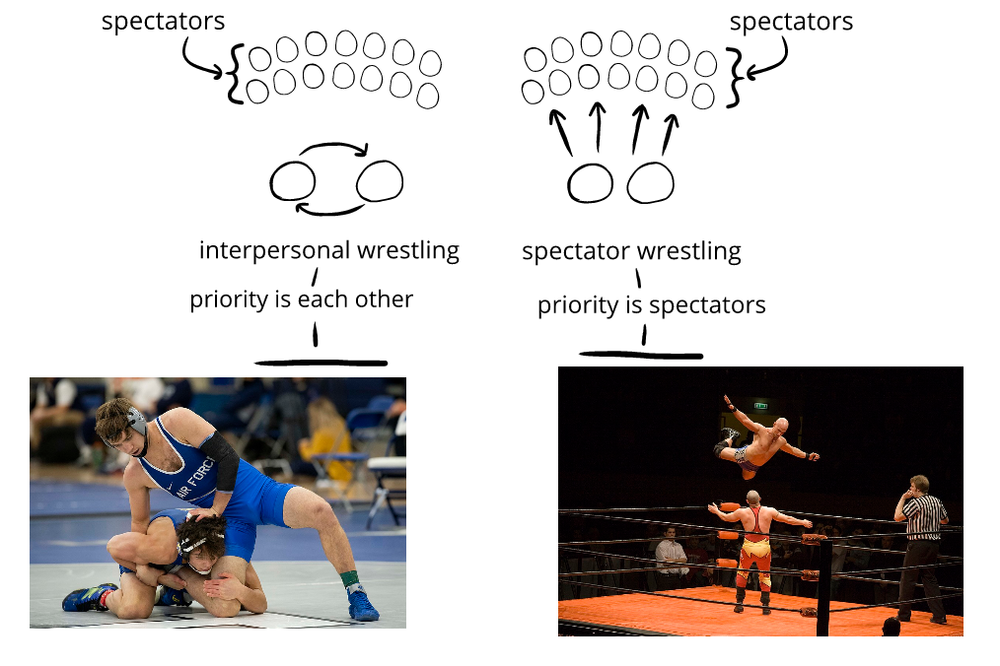

10. Spectator entertainment
In this chapter, we’ll look at spectator entertainment. Spectator entertainment are things that are premeditated or performed—like movies, books, graphic novels, internet videos, plays, standup, and so on.
To introduce this idea, we can make an analogy to wrestling. Interpersonal wrestling prioritizes the mutual experience between the wrestlers, while spectator wrestling prioritizes the experience of the spectators:
- Interpersonal wrestling is intense and interesting to participants—but not always as interesting to spectators. Casual spectators might see the wrestlers in odd-looking helmets and uniforms locked in a static grapple for a long time before something happens quickly and the match is over.
- Spectator wrestling was a commercialization of wrestling. Showrunners expanded who might enjoy watching wrestling by oriented everything around the enjoyment of the audience. Matches were staged and performed for spectators in a way that was easy to follow, exciting, visually stimulating, and so on.

Something similar happens with generating humor. Sometimes the focus is on mutual experience—we prioritize the humor we feel with someone. But other times, the focus is on the spectator’s experience—we prioritize the humor others feel.
We'll be talking about this throughout this chapter.